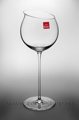

Бокал Sensual для Бургундского, 730 ml
Отзывы о бокалах Sensual
17.10.2011 10:36, Наталья
Шикарный бокал. Мы с мужем очень любим хорошие вина и знаем толк в бокалах. Sensual вполне оправдывает все ожидания. Красиво, качественно, стильно и функционально.
Все отзывы| Описание | |
| Кол-во в упаковке | 6 шт. |
| Объем | 730 ml |
| Высота | 270 mm |
| Диаметр | 112 mm |
| Артикул | 624173800 |
| Карточка | 242 |
| Производитель | Словакия |
Цена бокалов в наборе 6 шт.:
12650 руб.
КупитьНедалеко от Вены в 1897 году у одного нерадивого стеклодува вышел бокал с выпуклым дном. Все долго смеялись над ним и упрекали за перевод чистого драгоценного сырья и в итоге выгнали его с позором. Спустя несколько лет, бокал с неправильным дном стал эксклюзивной и штучной вещью в знатных домах господ того времени. Сегодня мастера фабрики Rona не утратили почтения к традициям и продолжают по сей день создавать удивительные вещи, вкладывая сердце в свои творения.
Удивительно красивый и необычный штучный бокал Sensual ручной работы с выпуклым дном. Прикоснитесь к наполненному вином бокалу, стоящему на столе, и он сам начнет вращаться, играя всеми красками напитка. Округлые формы служат идеальным партнером для полнотелых вин, достигших пика своей зрелости.
Смотрите видео:
"Как рождается бокал ручной работы"
Серия товара: Sensual
Общий вид бокалов серии Sensual
Весь список бокалов есть в отдельном разделе.

Товарная группа: Посуда ручной работы → Серия товара: Sensual
Другие: Бокалы для вин Бургундии
-
 Бокалы Swan для Бургундского вина, 860 ml
1850 руб.
Купить
6шт. в наборе
Бокалы Swan для Бургундского вина, 860 ml
1850 руб.
Купить
6шт. в наборе
No.6650860 1071 5 -
 Бокал для вин Бургундии серии Aquila, 710 ml
2300 руб.
Купить
2шт. в наборе
Бокал для вин Бургундии серии Aquila, 710 ml
2300 руб.
Купить
2шт. в наборе
No.3195710 1006 10 -

Бокал для вин Бургундии серии Aquila, 540 ml
6650 руб.
Купить
6шт. в наборе
No.3195540 992 6
Вся посуда этой же серии: Sensual
-
Бокал без ножки для Бордо, 460 ml
1550 руб.
Купить
4шт. в наборе
No.4221460 1083 3 -
Бокалы Charisma для вина Бордо, 650 ml
1350 руб.
Купить
4шт. в наборе
No.6044650 330 7 -
Бокалы серии Swan для вин Бордо, 700 ml
1800 руб.
Купить
6шт. в наборе
No.6650700 1073 1
Посуда ручной работы в Rona-shop.ru в тонких формах и легких желаний, доставка по регионам. Посмотреть в каталог - бокалы под Бургундское вино из экологически чистого хрусталина, так же список всех винных бокалов.